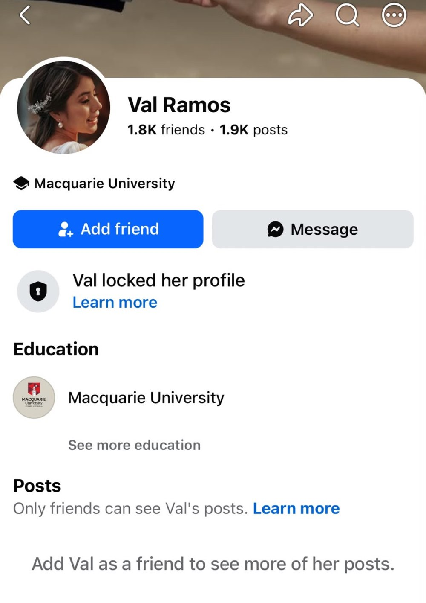
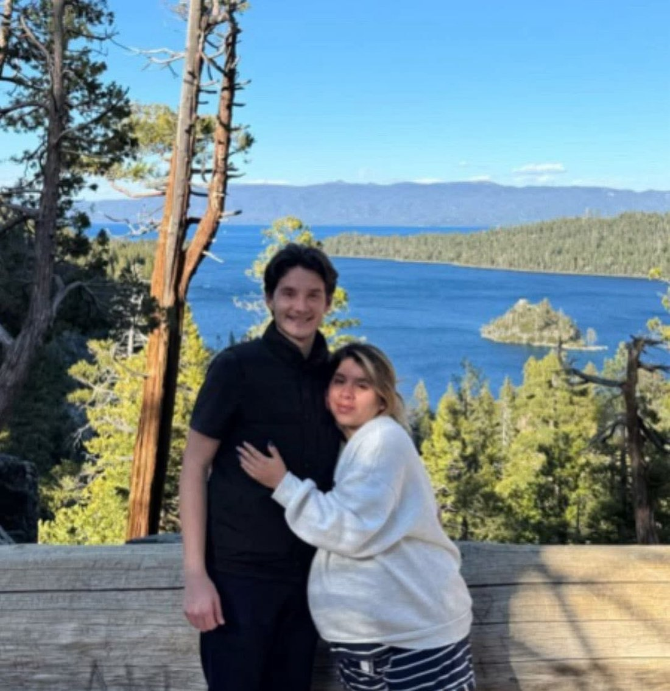

Names and known profiles
People who shared stories with this blog used more than one name. The names are listed here exactly as they were reported, so anyone searching any of them can find these stories. Names and profiles can change — a different name or a new profile would not change what people shared.
Names as reported
- Valeria Hackett
- Valeria Hojem
- Valery Hojem — the name on the RightPaw profile used in Story 6
- Zaira Gallardo — named together with Valeria Hojem in the Story 5 report (1 July 2023)
- Val Ramos — the name on the Facebook profile shared with this blog in October 2026 (see Their social media below)
- Valeria Ramos — the full form of the Val Ramos name, as reported to this blog
- Joshua Hacket — reported as Valeria's husband in Story 1; also written Joshua J. Hackett
Why you see two spellings
The family name appears in two ways in the reports: Hacket with one t, and Hackett with two.
Most of the original post uses the one-t spelling. One of the listed names uses two.
This site shows both spellings for one simple reason: people search both. Showing both helps a search find the same stories. It is not a claim about which spelling is a legal name.
What the profile screenshots showed
Screenshots shared with the reports show a Facebook profile under the name Valeria Hackett. As shown in those screenshots:
- Location shown: Gold Coast, Queensland
- Education shown: Macquarie University
- The profile was shown as locked, with a small number of friends
A Messenger chat in the same name also appears in the screenshots.
This page does not publish private details — no addresses, phone numbers, or other private information. One further name fragment in a screenshot was too unclear to read, so it has been left out rather than guessed.
Their social media
From the screenshots shared with the reports, this is what people have seen:
- Facebook: a profile under the name Valeria Hackett. Location shown: Gold Coast, Queensland. Education shown: Macquarie University. The profile is shown as locked.
- Messenger: a chat in the same name also appears in the screenshots.
- Facebook, as Val Ramos: a profile shared with this blog in October 2026 uses the name Val Ramos — the Val Ramos profile on Facebook. Its profile picture is the same photo as the one shown for Valeria Hackett on Messenger, and it also lists Macquarie University. The profile is locked.

The reports also used the name Valeria Hojem, and the Story 5 report names "Zaira Gallardo" alongside her. Names and profiles can change, so a new profile or a different name would not change what people reported.
If you spot a profile under a new name, you can send it through the share your story page, and it can be added to this list.
How they look — beware
These photos were shared with this blog as photos of the two people named in the stories here: Valeria Hacket (also written Hackett) and Joshua Hacket. Names and profiles can change. Faces are harder to change. So before you say yes to work, a stay, a rental or a sale — check the face first.

Every photo on this blog is of these two people — there are no other photos here. If you have a photo from a report, you can send it through the share your story page.
Think a name or profile here is you?
You have a right to answer. Use the right of reply page to ask for a correction or removal, or to share your side.
Everything on this page comes from personal reports — what people say happened to them. It is not a court finding.
Filed under: #AussieScammers